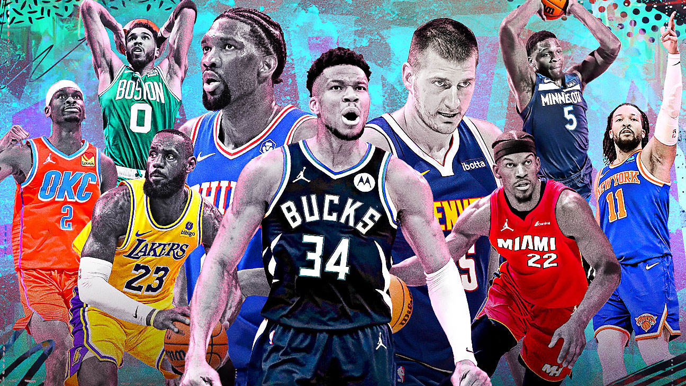

BASKETBALL

Basketball is a fast-paced and dynamic sport that has captured the hearts of millions around the globe. From the NBA in the United States to international leagues and competitions, basketball delivers thrills and unforgettable moments on the court.
Top Leagues and Competitions
- NBA (National Basketball Association): The premier basketball league in the world, featuring teams like the Los Angeles Lakers, Golden State Warriors, and Chicago Bulls.
- EuroLeague: Europe's top basketball competition, featuring elite clubs like Real Madrid, CSKA Moscow, and Fenerbahçe.
- FIBA World Cup: The international basketball championship, where countries from around the world compete for the global title.
Upcoming Matches
- Los Angeles Lakers vs. Golden State Warriors - Date: 22nd September 2024
- Real Madrid vs. CSKA Moscow - Date: 26th September 2024
- FIBA World Cup Finals - Date: 5th October 2024
Basketball Legends

Over the years, basketball has been home to some of the most iconic athletes in sports history. Players like Michael Jordan, Kobe Bryant, LeBron James, and Shaquille O'Neal have left an indelible mark on the sport with their extraordinary skills and achievements.
Basketball World Records
- Highest Scoring Game: Wilt Chamberlain scored 100 points in a single NBA game in 1962, setting a record that still stands today.
- Most NBA Championships: The Boston Celtics hold the record for the most NBA titles with 17 championships, tied with the Los Angeles Lakers.
- Longest Winning Streak: The Los Angeles Lakers hold the record for the longest winning streak in NBA history with 33 consecutive victories during the 1971-72 season.
Fun Facts About Basketball
- Basketball was invented by Dr. James Naismith in 1891 as a way to keep athletes fit during the winter months.
- The first basketball game was played with a soccer ball and two peach baskets as goals.
- The NBA's shortest player, Muggsy Bogues, stood at just 5'3", while the tallest, Gheorghe Muresan, was 7'7".
NBA 2024-2025 Season Preview
The upcoming NBA season is shaping up to be one of the most competitive in recent memory. With stars like Stephen Curry, Giannis Antetokounmpo, and Luka Dončić leading their respective teams, the race for the championship is wide open. Stay tuned for another thrilling season of basketball action.